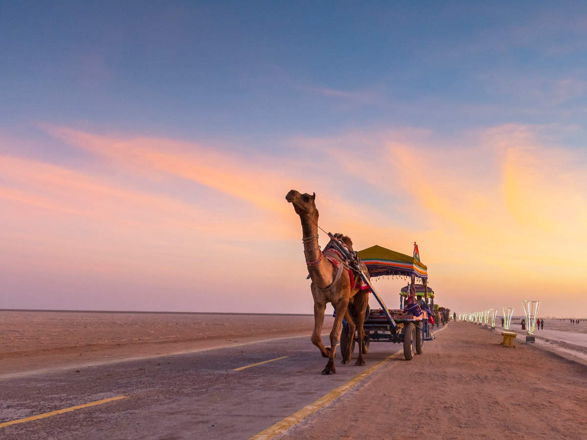
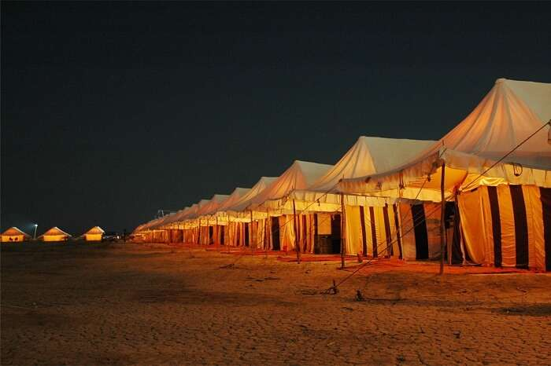
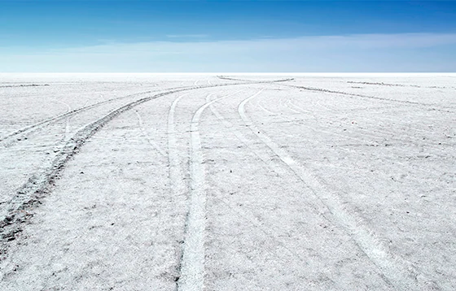
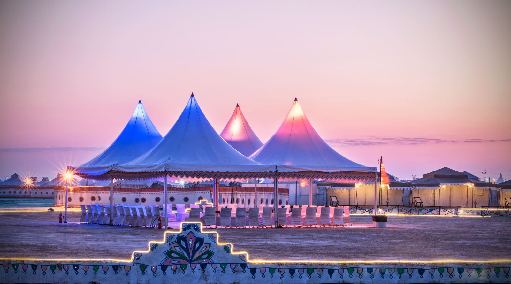

KUTCH, GUJARAT




Gujarat is a state in the western part of India famous for its diverse culture, heritage and authentic cuisine. Situated on the banks of Sabarmati River, Gujarat houses some of the best artifacts from the medieval period.
Its endless stories from ground to the sky are timeless with historical and cultural traditions embellishing this State. Virtually an island that resembles the shape of a tortoise, Kutch is an erstwhile princely state of India holding onto its grandeur nature from the past.